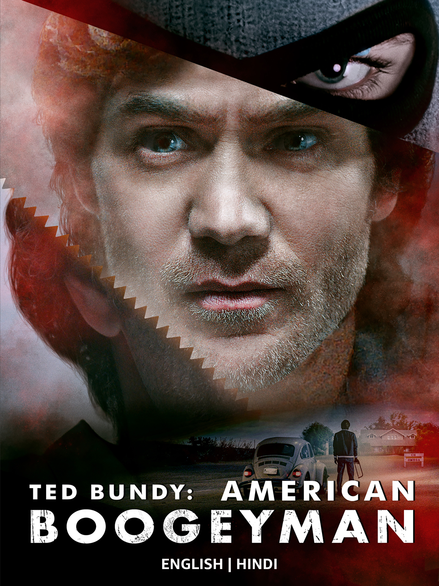

⚠️ Viewer discretion advised. Contains disturbing content based on real events.
Ted Bundy: American Boogeyman Watch the full case file for the 2021 thriller Ted Bundy: American Boogeyman here. This chilling film delves into the early, most brutal phase of Ted Bundy's murder spree, focusing on the pursuit by FBI agent Kathleen McChesney and forensic psychologist Dr. Robert Keppel. Unlike other portrayals of the charismatic serial killer, American Boogeyman emphasizes the dark procedural aspects and the psychological hunt that defined the 1970s.
← Return to Archive